Getting Started With Football Analytics - Mohammad Adnan
Hi all,
I sit down with Mohammad Adnan, who shares some great resources as he grows in his own football analytics journey.
Find him on X, and Github.CJ: For those that are unaware, could you tell us a little about your football analytics journey to date? Was it a combination of enjoying football, and also just wanting to learn to code?MA: My journey into football analytics began during my Mechanical Engineering studies. While pursuing my degree, I took a minor course in Python programming, which sparked my interest in coding. As a lifelong football enthusiast, I naturally gravitated towards applying my newfound programming skills to the sport I loved.I started by following the excellent tutorials provided by @mckayjohns on YouTube and leveraging the powerful ‘mpl soccer’ library. These resources made learning football data analysis both accessible and enjoyable. I dedicated significant time to replicating existing projects, experimenting with different approaches, and gradually developing my own unique insights.
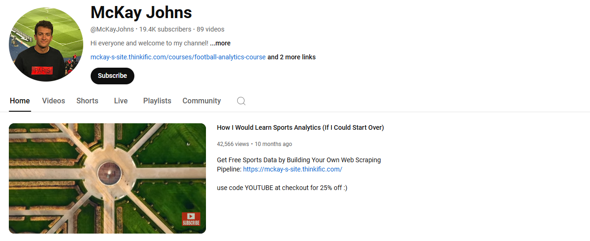
A crucial aspect of successful football data analysis is a deep understanding of the tactical nuances of the game. By combining my technical skills with my extensive knowledge of football, I have been able to uncover valuable insights that might otherwise be overlooked. This synergy between data and tactics is essential for producing impactful analysis.
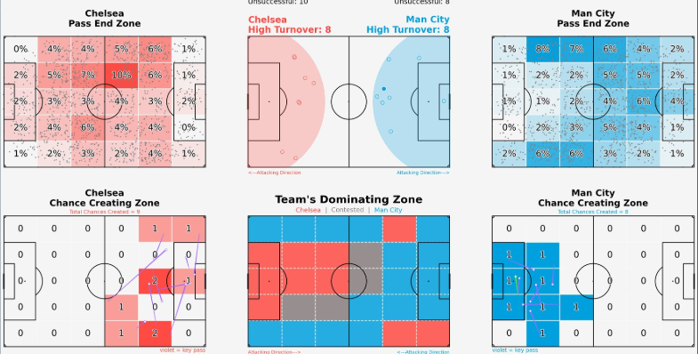
While I am still learning and growing, I am proud of the progress I have made. I am excited to continue exploring the possibilities of football analytics and contributing to the wider football community!CJ: Your post match report is a thing of beauty. Could you talk a little as to some of the complexities faced in creating charts like the keeper saves and addressing defensive blocks?
My repo can be found here.
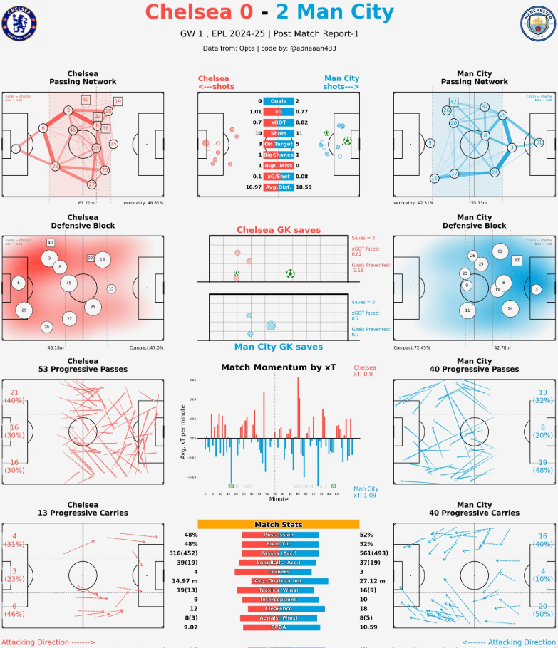
MA: When I learned making my own functions and using that multiple times, I was fascinated by the idea of making an automated process where I will get post match analysis for different matches easily without coding every time. Then I started to learn gathering multiple plots in a single plot to make a dashboard type. I started to look for other people’s dashboards to get some ideas. After a lot of trial and error I had come with the idea of making everything as simple as possible. That's why I didn't use any fancy orientations or arrangements of the individual plots, just put those simply in two sides of the dashboard for the two teams. And also made this usable multiple times for any match analysis, by using some variables in the functions, so that changing the values of those variables will make it possible to use for any match analysis.Of course I have faced a lot of difficulties doing this. For example, to plot the keeper saves, I needed to resize the data in such a way that it fits the plot. That was a very difficult part for me, because I had to calculate the data coordinates manually for those shots which were hit in the goal posts. From there I got the idea of the range of the values and then organized the plot in that range to plot the keeper saves. The defensive block plot wasn't that much harder, because I used the idea from the pass network, and it was easier than the pass network plot, because it didn't need any line among the individual players, just the scatters were enough.
You can find the details in my git repo.
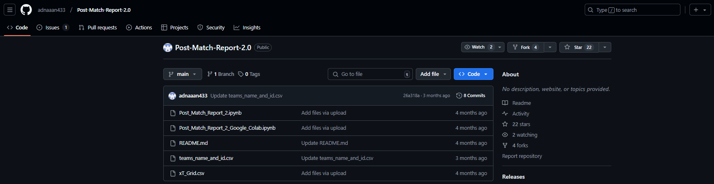
CJ: The steps for the post match report are outlined in your github repo, often utilising information from the who scored website and fotmob. It seems like a lot of continuous learning went into creating the report. Which of the charts did you find most challenging? Why is that chart so valuable in the context of football?MA: The most important thing for a Post Match Report is to get the recent matches event data. Whoscored website provides that, but the scraping process of those data using selenium and chrome web driver was very difficult for me. I would like to Thank @dizwalski for sharing his beautiful and easy process of data scraping from whoscored website without the complexities of seleniums! That simple process of scraping Whoscored website data kept me in regular football analysis, otherwise I would have already quit the football data analysis. Using his code I could skip learning the complex process of web scraping. Although I think everyone should at least try to learn web scraping skills, this is a very important skill for data analysts. But as I found it very hard for me, I still couldn't learn web scraping. And the Fotmob website was very easy to scrape, using @mckayjohns YouTube tutorial, which was a simple 3 lines of code, that's why this was very easy for me. But without learning the basics of web scraping, using other's code is never a good solution. Because recently Fotmob has changed something in their website slightly, the previous process of Fotmob website scraping is not working. I am eagerly waiting for the talented community to see what can be done!
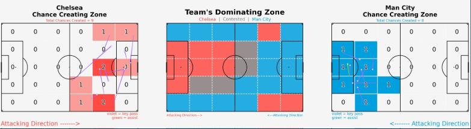
The most difficult chart for me was the ‘Team’s Dominating Zones'. I had to dig into the pitch.heatmap() function of mpl soccer library, to understand how that heatmap works, and how I can fit my data into that manually. After a lot of research, I understood the process and came up with a very unique idea to plot that chart. I didn't find any tutorials to make that chart, so I had to work for every part of the function manually and in my own way. Of course that wasn't an efficient way to code, but all the hard work to understand the heatmap function and using that in my own way was paid off after the successful implementation of that function. This chart is valuable to understand the team's domination in different pitch areas in a match. I first saw this type of chart on Opta's website, but didn't find any tutorials to make something like that. So I had to make this myself.CJ: When we chatted, you spoke to how models like chat gpt have helped you in learning to code. Could you tell us a little more about how you tackle that idea of debugging and enhancing your work with prompts?MA: Chatgpt has a huge role in my learning to code. I knew only the basics of the python programming language, but didn't know about different other features like using multiple libraries and functions, making my own functions and using them. I wasn't even familiar with the different filtering process of dataframes to do data analysis! Whenever I needed to filter any specific data from a huge dataframe, I used to copy and paste the whole dataframe into chatgpt and told it to filter that specific data from the dataframe. It gave me the whole python code to filter those specific data and also explained the code line by line! In this way I have learnt many complex processes of dataframe handling from chatgpt. Also whenever I faced any errors, I used to copy and paste the whole error message into chatgpt. Then it explained the error and rewrote the code in the right way. That's why now I can debug 90% of the errors myself.CJ: Some of your work online is getting huge amounts of attention, such as the on the ball compactness. I hadn’t seen a visual like this before! What message were you trying to convey with this piece, if we look specifically at the premier league?
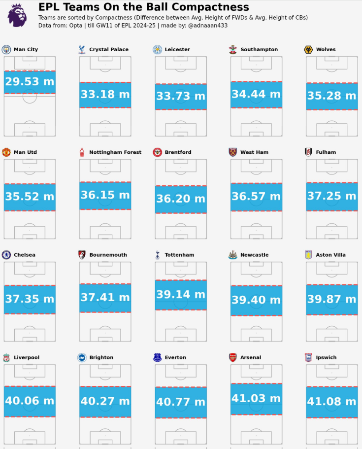
MA: The term ‘On the Ball Compactness’ refers to how close (vertically) the teammates stays on the ball, if they are more compact, that means they find themselves with short passes, if they aren't that much compact, they have to go long for ball progression. That's what I was trying to find out in the teams. So, I took the Difference between avg. height of the Forwards and avg. height of the CenterBacks(avg. height means avg. On the Ball actions distance from own goal line)But sometimes in some matches, one forward may stay isolated and too far away from other teammates, Or sometimes we see the Forwards to stay in a much deeper position while receiving the ball. I decided to take the avg. height of the top two locations among the players and using that value as the avg. height of the Forwards.As I follow Premier League regularly, I have noticed Man City this season, they stay compact on the ball. From there I was interested to know about the other teams’ compactness. That's why I made that visualization to compare teams playing style on the ball. After making that visualization, a lot of people also asked me to make something like this for ‘Off The Ball Compactness’. But in event data the only actions with the ball is recorded, so getting the data of the players location while Off The Ball is not possible in this case. We have to analyse this from Tracking Data which is not available for free.In this visualization below we can see what I mean by on the vertical compactness, here the shaded area is vertical compactness:
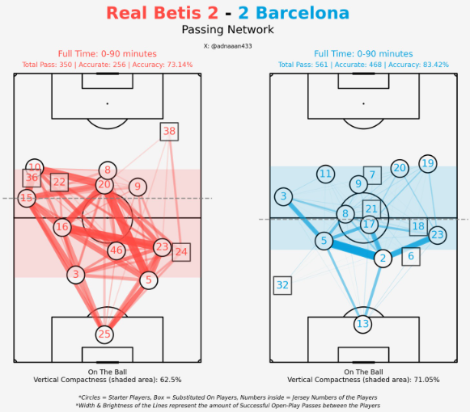
Look at Barcelona, I took the avg height of the 2 CBs (#5 Inigo and #2 Cubarsi) as the lower line. And avg height of the top 2 forwards (#20 Olmo and #19 Lamine). In between area of these 2 lines is what I call On the Ball Compactness!Look, as here Lewa has dropped deeper more often, thus his avg location is much lower. That's why only considering the Forwards location wasn't enough to get the actual on the ball compactness. Thus I prefer to take the avg of top 2 forwards. CJ: Your work often includes small multiples, looking across either teams, or leagues. Your full back analysis really caught the eye of our SportsVizSunday initiative. How do you think the use of trellis charts favors your analysis in the case of your LaLiga full back viz?
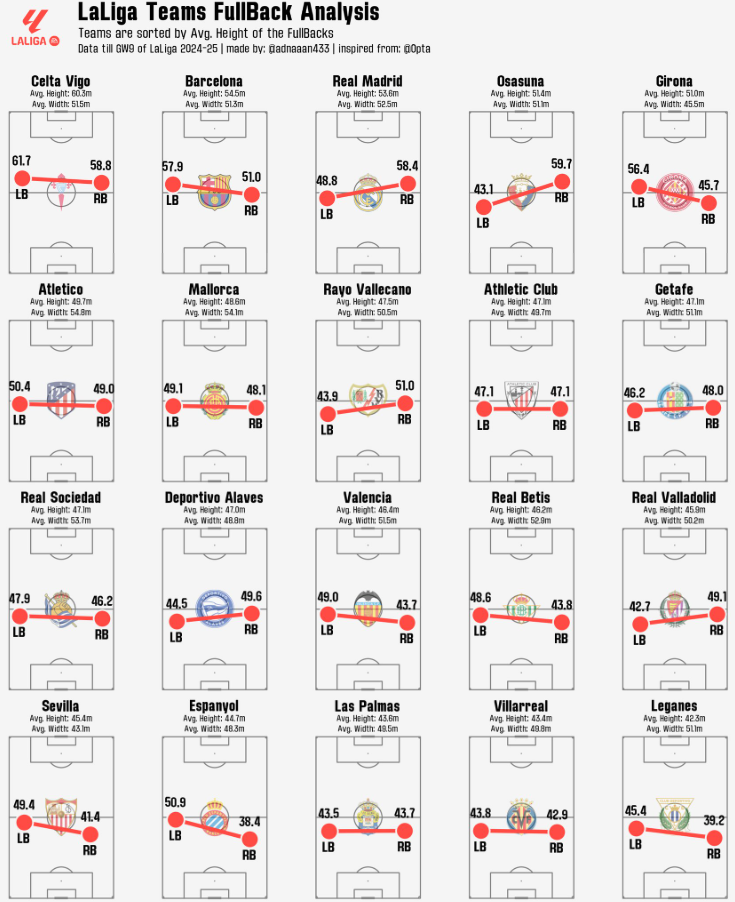
MA: Thanks a lot for appreciating my work on your platform. Actually that Fullback analysis wasn't my unique idea, I saw a post from the Opta analyst account which was analysing the Premier League Fullbacks. That inspired me to do the same for LaLiga. We have seen a revolutionary change in the case of the role of a Fullback in modern football. Some coaches like highly attacking Fullbacks, some use them as inverted Fullback to increase the number of players in the midfield during build-up, some prefer to use as defensive Fullback which often becomes a third CB. So if we look at the avg. touch position of the Fullbacks in different teams, we can get some idea about their role in the team. That's why I made that visualization.
In La Liga, Celta Vigo, Barcelona and Real Madrid push up high.Real Madrid, Osasuna, Girona, Rayo Vallecano, Sevilla, Espanyol asymmetric. Leganes, Villarreal and Las Palmas very deep.CJ: I really like your work on looking at corner pieces. If someone was a beginner and wanted help explaining how to recreate something like this, what steps would you outline from the code you wrote?
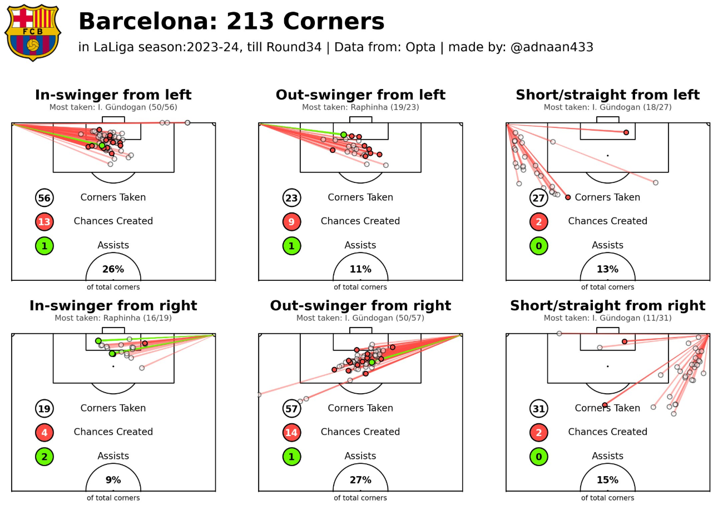
Thank you very much. Actually for the beginners the most important thing is to learn all the visualisation tools first. For example, as we mostly use the mpl soccer library, we have to get an idea about their most common and important functions. They have a beautiful website where every function has been explained with example codes for practice.
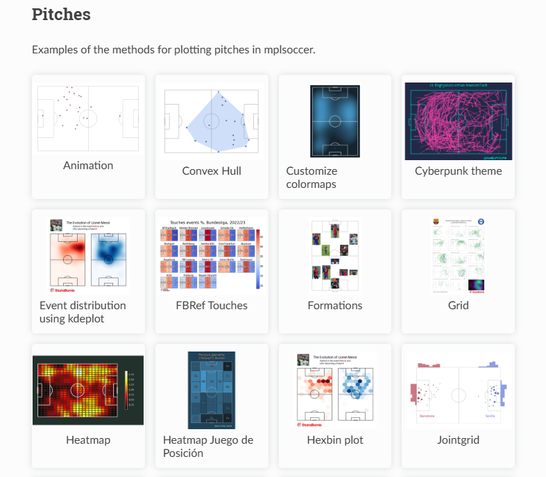
Then you have to understand the event data properly. For example if we get event data from Statsbomb, they have different columns for tagging detailed information about a pass or a shot. But when you scrape event data from whoscored website, they tag all the detailed information about a pass or a shot in a single qualifiers column. You have to learn how to filter the specific data from that qualifiers column. For making the corners analysis visualization, I didn't get the information about whether a corner kick was in-swinger or out-swinger directly in the qualifiers column. There was information about whether the corner kick was taken with the Left foot or Right foot. According to this information I made the conditions that, A corner kick will be in-swinger if,
It was taken with Left foot from the Right corner of the pitch
It was taken with Right foot from the Left corner of the pitch
A corner kick will be out-swinger if,
It was taken with Left foot from the Left corner of the pitch
It was taken with Right foot from the Right corner of the pitch
This way I filtered the data and the visualised with basic mpl soccer library functions.CJ: I would say the online x community has a few “big names” when it comes to creating visuals with football data. Was there anyone in particular that influenced your own journey of learning?
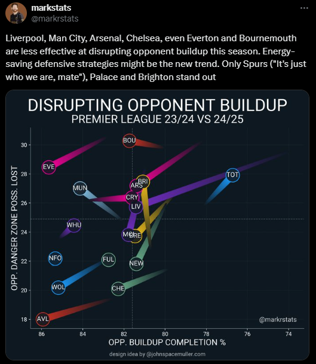
MA: @markrstats is the one who influenced me to start football visualizations. As a football fan I used to follow some of the accounts in X who share different statistics of football (Sofascore, Fotmob, Squawka etc). One day randomly a post of @markrstats came to my feed then I realized that football data can be visualised also. From then I started to look at how to visualise those football data. And then I found the @mckayjohns. From then I started to follow the big names who create football data visualizations. I found @BeGriffis , @themachineball (Aritra), @TheDevilsDNA, @pranav_m28 as the most consistent analysts. They always bring some new ideas in football data analysis. From them I am also inspired to do something new. Also there are a lot of big names like @totalf0otball, @TotalAnalysis, @footballyitics_, @_JKDS_, @Ligandro22, @chunhang7 and many more people. I follow them to get new ideas from them. I really admire their ability of making new ideas of visualizations. I am no where near to their level and experience in this field, but they are the main inspiration for me to work in football data analysis.CJ Round Up: Thank you so much for sharing your journey and work to date. I think many entry level analysts will be inspired from this, and realise the support out there. One of the big takeaways for me is both the number of resources available for free, but also the different metrics the community are currently interested in.
LOGGING OFF,
CJ
 CJ: For those that are unaware, could you tell us a little about your football analytics journey to date? Was it a combination of enjoying football, and also just wanting to learn to code?
MA: My journey into football analytics began during my Mechanical Engineering studies. While pursuing my degree, I took a minor course in Python programming, which sparked my interest in coding. As a lifelong football enthusiast, I naturally gravitated towards applying my newfound programming skills to the sport I loved.
I started by following the excellent tutorials provided by @mckayjohns on YouTube and leveraging the powerful ‘mpl soccer’ library. These resources made learning football data analysis both accessible and enjoyable. I dedicated significant time to replicating existing projects, experimenting with different approaches, and gradually developing my own unique insights.
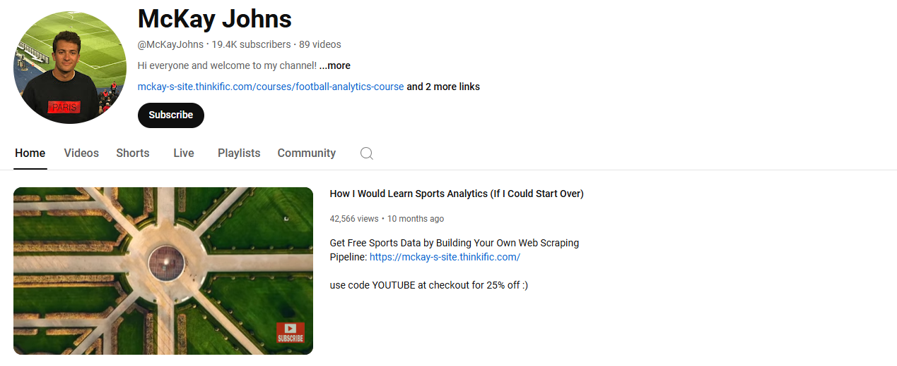
A crucial aspect of successful football data analysis is a deep understanding of the tactical nuances of the game. By combining my technical skills with my extensive knowledge of football, I have been able to uncover valuable insights that might otherwise be overlooked. This synergy between data and tactics is essential for producing impactful analysis.
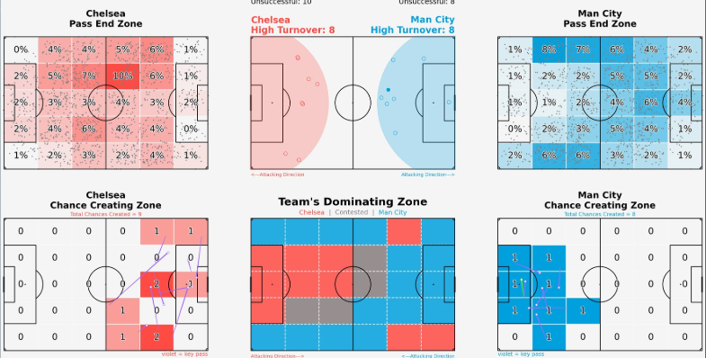
While I am still learning and growing, I am proud of the progress I have made. I am excited to continue exploring the possibilities of football analytics and contributing to the wider football community!
CJ: Your post match report is a thing of beauty. Could you talk a little as to some of the complexities faced in creating charts like the keeper saves and addressing defensive blocks?
My repo can be found here.
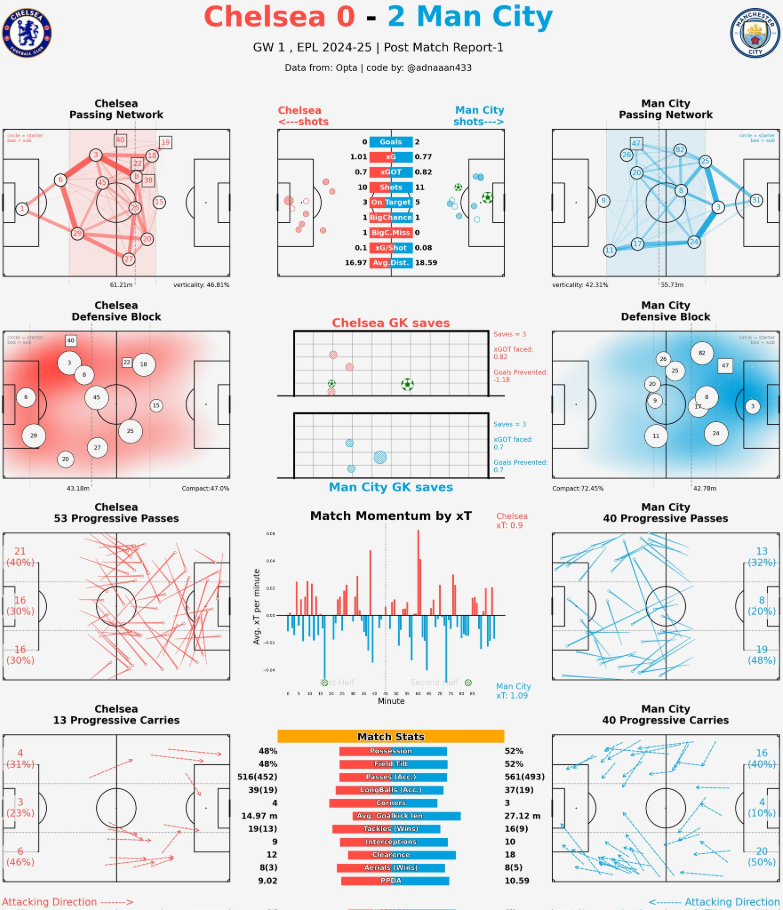
MA: When I learned making my own functions and using that multiple times, I was fascinated by the idea of making an automated process where I will get post match analysis for different matches easily without coding every time.
Then I started to learn gathering multiple plots in a single plot to make a dashboard type. I started to look for other people’s dashboards to get some ideas. After a lot of trial and error I had come with the idea of making everything as simple as possible. That's why I didn't use any fancy orientations or arrangements of the individual plots, just put those simply in two sides of the dashboard for the two teams. And also made this usable multiple times for any match analysis, by using some variables in the functions, so that changing the values of those variables will make it possible to use for any match analysis.
Of course I have faced a lot of difficulties doing this. For example, to plot the keeper saves, I needed to resize the data in such a way that it fits the plot. That was a very difficult part for me, because I had to calculate the data coordinates manually for those shots which were hit in the goal posts. From there I got the idea of the range of the values and then organized the plot in that range to plot the keeper saves. The defensive block plot wasn't that much harder, because I used the idea from the pass network, and it was easier than the pass network plot, because it didn't need any line among the individual players, just the scatters were enough.
You can find the details in my git repo.
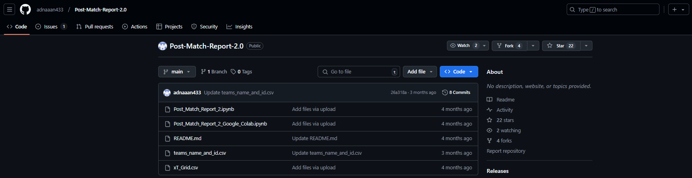
CJ: The steps for the post match report are outlined in your github repo, often utilising information from the who scored website and fotmob. It seems like a lot of continuous learning went into creating the report. Which of the charts did you find most challenging? Why is that chart so valuable in the context of football?
MA: The most important thing for a Post Match Report is to get the recent matches event data. Whoscored website provides that, but the scraping process of those data using selenium and chrome web driver was very difficult for me. I would like to Thank @dizwalski for sharing his beautiful and easy process of data scraping from whoscored website without the complexities of seleniums! That simple process of scraping Whoscored website data kept me in regular football analysis, otherwise I would have already quit the football data analysis. Using his code I could skip learning the complex process of web scraping. Although I think everyone should at least try to learn web scraping skills, this is a very important skill for data analysts. But as I found it very hard for me, I still couldn't learn web scraping.
And the Fotmob website was very easy to scrape, using @mckayjohns YouTube tutorial, which was a simple 3 lines of code, that's why this was very easy for me. But without learning the basics of web scraping, using other's code is never a good solution. Because recently Fotmob has changed something in their website slightly, the previous process of Fotmob website scraping is not working. I am eagerly waiting for the talented community to see what can be done!
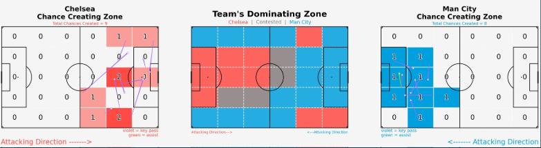
The most difficult chart for me was the ‘Team’s Dominating Zones'. I had to dig into the pitch.heatmap() function of mpl soccer library, to understand how that heatmap works, and how I can fit my data into that manually. After a lot of research, I understood the process and came up with a very unique idea to plot that chart. I didn't find any tutorials to make that chart, so I had to work for every part of the function manually and in my own way. Of course that wasn't an efficient way to code, but all the hard work to understand the heatmap function and using that in my own way was paid off after the successful implementation of that function.
This chart is valuable to understand the team's domination in different pitch areas in a match. I first saw this type of chart on Opta's website, but didn't find any tutorials to make something like that. So I had to make this myself.
CJ: When we chatted, you spoke to how models like chat gpt have helped you in learning to code. Could you tell us a little more about how you tackle that idea of debugging and enhancing your work with prompts?
MA: Chatgpt has a huge role in my learning to code. I knew only the basics of the python programming language, but didn't know about different other features like using multiple libraries and functions, making my own functions and using them. I wasn't even familiar with the different filtering process of dataframes to do data analysis! Whenever I needed to filter any specific data from a huge dataframe, I used to copy and paste the whole dataframe into chatgpt and told it to filter that specific data from the dataframe. It gave me the whole python code to filter those specific data and also explained the code line by line! In this way I have learnt many complex processes of dataframe handling from chatgpt. Also whenever I faced any errors, I used to copy and paste the whole error message into chatgpt. Then it explained the error and rewrote the code in the right way. That's why now I can debug 90% of the errors myself.
CJ: Some of your work online is getting huge amounts of attention, such as the on the ball compactness. I hadn’t seen a visual like this before! What message were you trying to convey with this piece, if we look specifically at the premier league?
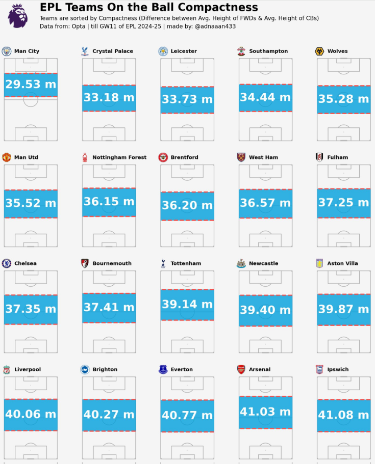
MA: The term ‘On the Ball Compactness’ refers to how close (vertically) the teammates stays on the ball, if they are more compact, that means they find themselves with short passes, if they aren't that much compact, they have to go long for ball progression. That's what I was trying to find out in the teams.
So, I took the Difference between avg. height of the Forwards and avg. height of the CenterBacks
(avg. height means avg. On the Ball actions distance from own goal line)
But sometimes in some matches, one forward may stay isolated and too far away from other teammates, Or sometimes we see the Forwards to stay in a much deeper position while receiving the ball. I decided to take the avg. height of the top two locations among the players and using that value as the avg. height of the Forwards.
As I follow Premier League regularly, I have noticed Man City this season, they stay compact on the ball. From there I was interested to know about the other teams’ compactness. That's why I made that visualization to compare teams playing style on the ball.
After making that visualization, a lot of people also asked me to make something like this for ‘Off The Ball Compactness’. But in event data the only actions with the ball is recorded, so getting the data of the players location while Off The Ball is not possible in this case. We have to analyse this from Tracking Data which is not available for free.
In this visualization below we can see what I mean by on the vertical compactness, here the shaded area is vertical compactness:
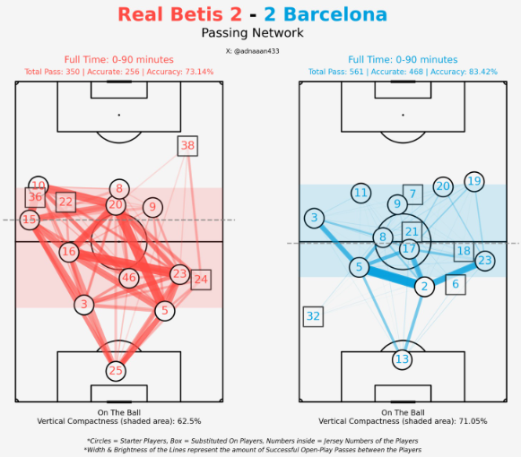
Look at Barcelona, I took the avg height of the 2 CBs (#5 Inigo and #2 Cubarsi) as the lower line. And avg height of the top 2 forwards (#20 Olmo and #19 Lamine). In between area of these 2 lines is what I call On the Ball Compactness!
Look, as here Lewa has dropped deeper more often, thus his avg location is much lower. That's why only considering the Forwards location wasn't enough to get the actual on the ball compactness. Thus I prefer to take the avg of top 2 forwards.
CJ: Your work often includes small multiples, looking across either teams, or leagues. Your full back analysis really caught the eye of our SportsVizSunday initiative. How do you think the use of trellis charts favors your analysis in the case of your LaLiga full back viz?
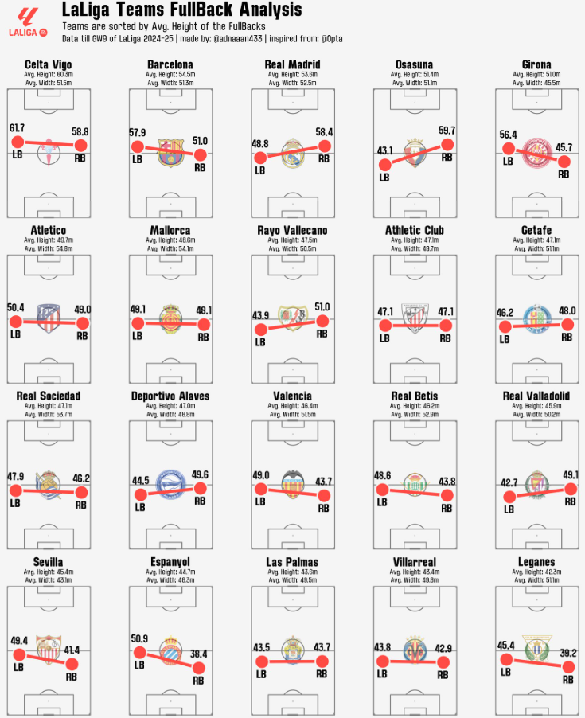
MA: Thanks a lot for appreciating my work on your platform. Actually that Fullback analysis wasn't my unique idea, I saw a post from the Opta analyst account which was analysing the Premier League Fullbacks. That inspired me to do the same for LaLiga.
We have seen a revolutionary change in the case of the role of a Fullback in modern football. Some coaches like highly attacking Fullbacks, some use them as inverted Fullback to increase the number of players in the midfield during build-up, some prefer to use as defensive Fullback which often becomes a third CB. So if we look at the avg. touch position of the Fullbacks in different teams, we can get some idea about their role in the team. That's why I made that visualization.
In La Liga, Celta Vigo, Barcelona and Real Madrid push up high.
Real Madrid, Osasuna, Girona, Rayo Vallecano, Sevilla, Espanyol asymmetric.
Leganes, Villarreal and Las Palmas very deep.
CJ: I really like your work on looking at corner pieces. If someone was a beginner and wanted help explaining how to recreate something like this, what steps would you outline from the code you wrote?
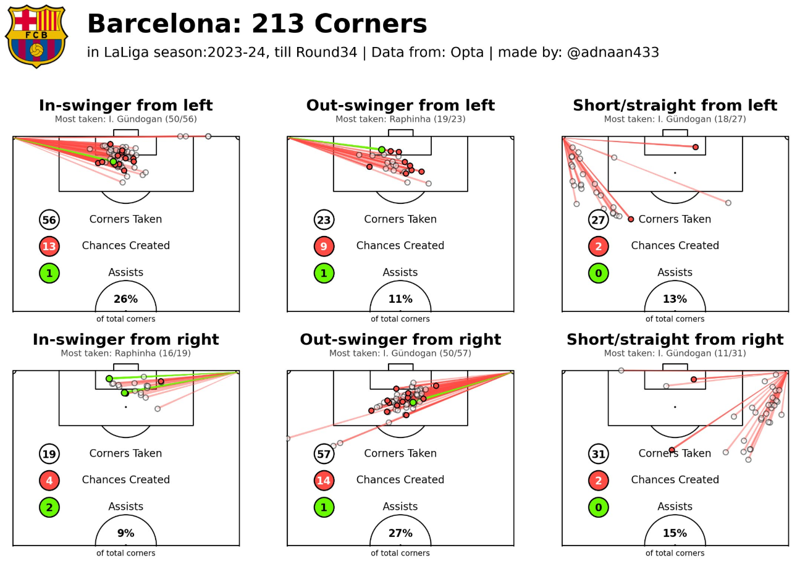
Thank you very much. Actually for the beginners the most important thing is to learn all the visualisation tools first. For example, as we mostly use the mpl soccer library, we have to get an idea about their most common and important functions. They have a beautiful website where every function has been explained with example codes for practice.
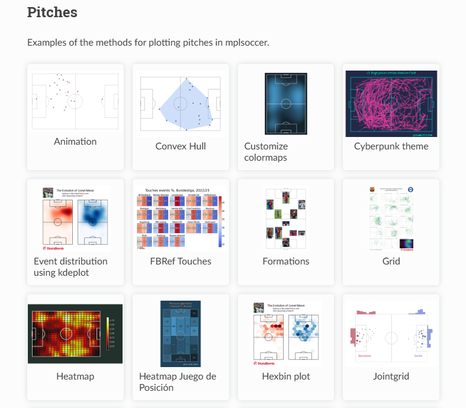
Then you have to understand the event data properly. For example if we get event data from Statsbomb, they have different columns for tagging detailed information about a pass or a shot. But when you scrape event data from whoscored website, they tag all the detailed information about a pass or a shot in a single qualifiers column. You have to learn how to filter the specific data from that qualifiers column.
For making the corners analysis visualization, I didn't get the information about whether a corner kick was in-swinger or out-swinger directly in the qualifiers column. There was information about whether the corner kick was taken with the Left foot or Right foot. According to this information I made the conditions that,
A corner kick will be in-swinger if,
CJ: For those that are unaware, could you tell us a little about your football analytics journey to date? Was it a combination of enjoying football, and also just wanting to learn to code?
MA: My journey into football analytics began during my Mechanical Engineering studies. While pursuing my degree, I took a minor course in Python programming, which sparked my interest in coding. As a lifelong football enthusiast, I naturally gravitated towards applying my newfound programming skills to the sport I loved.
I started by following the excellent tutorials provided by @mckayjohns on YouTube and leveraging the powerful ‘mpl soccer’ library. These resources made learning football data analysis both accessible and enjoyable. I dedicated significant time to replicating existing projects, experimenting with different approaches, and gradually developing my own unique insights.
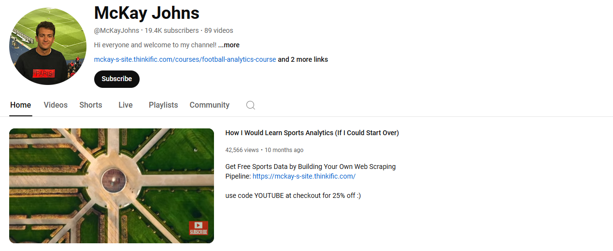
A crucial aspect of successful football data analysis is a deep understanding of the tactical nuances of the game. By combining my technical skills with my extensive knowledge of football, I have been able to uncover valuable insights that might otherwise be overlooked. This synergy between data and tactics is essential for producing impactful analysis.
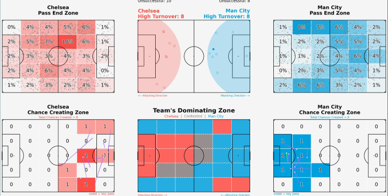
While I am still learning and growing, I am proud of the progress I have made. I am excited to continue exploring the possibilities of football analytics and contributing to the wider football community!
CJ: Your post match report is a thing of beauty. Could you talk a little as to some of the complexities faced in creating charts like the keeper saves and addressing defensive blocks?
My repo can be found here.
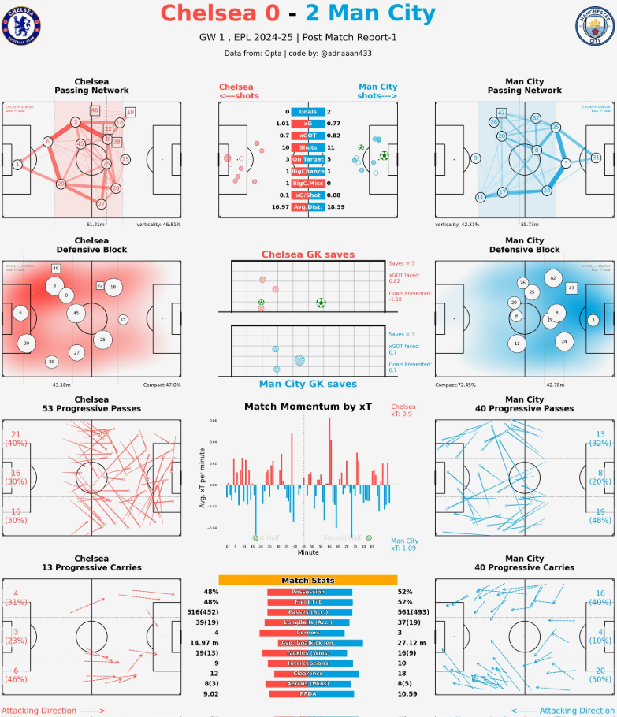
MA: When I learned making my own functions and using that multiple times, I was fascinated by the idea of making an automated process where I will get post match analysis for different matches easily without coding every time.
Then I started to learn gathering multiple plots in a single plot to make a dashboard type. I started to look for other people’s dashboards to get some ideas. After a lot of trial and error I had come with the idea of making everything as simple as possible. That's why I didn't use any fancy orientations or arrangements of the individual plots, just put those simply in two sides of the dashboard for the two teams. And also made this usable multiple times for any match analysis, by using some variables in the functions, so that changing the values of those variables will make it possible to use for any match analysis.
Of course I have faced a lot of difficulties doing this. For example, to plot the keeper saves, I needed to resize the data in such a way that it fits the plot. That was a very difficult part for me, because I had to calculate the data coordinates manually for those shots which were hit in the goal posts. From there I got the idea of the range of the values and then organized the plot in that range to plot the keeper saves. The defensive block plot wasn't that much harder, because I used the idea from the pass network, and it was easier than the pass network plot, because it didn't need any line among the individual players, just the scatters were enough.
You can find the details in my git repo.
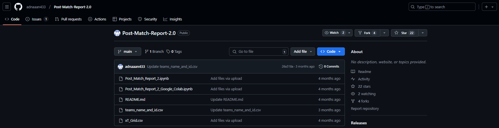
CJ: The steps for the post match report are outlined in your github repo, often utilising information from the who scored website and fotmob. It seems like a lot of continuous learning went into creating the report. Which of the charts did you find most challenging? Why is that chart so valuable in the context of football?
MA: The most important thing for a Post Match Report is to get the recent matches event data. Whoscored website provides that, but the scraping process of those data using selenium and chrome web driver was very difficult for me. I would like to Thank @dizwalski for sharing his beautiful and easy process of data scraping from whoscored website without the complexities of seleniums! That simple process of scraping Whoscored website data kept me in regular football analysis, otherwise I would have already quit the football data analysis. Using his code I could skip learning the complex process of web scraping. Although I think everyone should at least try to learn web scraping skills, this is a very important skill for data analysts. But as I found it very hard for me, I still couldn't learn web scraping.
And the Fotmob website was very easy to scrape, using @mckayjohns YouTube tutorial, which was a simple 3 lines of code, that's why this was very easy for me. But without learning the basics of web scraping, using other's code is never a good solution. Because recently Fotmob has changed something in their website slightly, the previous process of Fotmob website scraping is not working. I am eagerly waiting for the talented community to see what can be done!
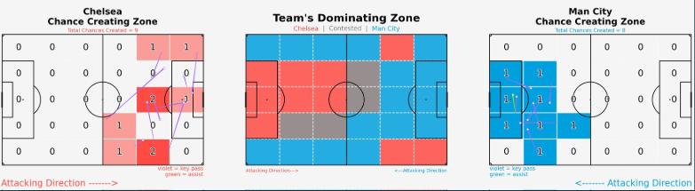
The most difficult chart for me was the ‘Team’s Dominating Zones'. I had to dig into the pitch.heatmap() function of mpl soccer library, to understand how that heatmap works, and how I can fit my data into that manually. After a lot of research, I understood the process and came up with a very unique idea to plot that chart. I didn't find any tutorials to make that chart, so I had to work for every part of the function manually and in my own way. Of course that wasn't an efficient way to code, but all the hard work to understand the heatmap function and using that in my own way was paid off after the successful implementation of that function.
This chart is valuable to understand the team's domination in different pitch areas in a match. I first saw this type of chart on Opta's website, but didn't find any tutorials to make something like that. So I had to make this myself.
CJ: When we chatted, you spoke to how models like chat gpt have helped you in learning to code. Could you tell us a little more about how you tackle that idea of debugging and enhancing your work with prompts?
MA: Chatgpt has a huge role in my learning to code. I knew only the basics of the python programming language, but didn't know about different other features like using multiple libraries and functions, making my own functions and using them. I wasn't even familiar with the different filtering process of dataframes to do data analysis! Whenever I needed to filter any specific data from a huge dataframe, I used to copy and paste the whole dataframe into chatgpt and told it to filter that specific data from the dataframe. It gave me the whole python code to filter those specific data and also explained the code line by line! In this way I have learnt many complex processes of dataframe handling from chatgpt. Also whenever I faced any errors, I used to copy and paste the whole error message into chatgpt. Then it explained the error and rewrote the code in the right way. That's why now I can debug 90% of the errors myself.
CJ: Some of your work online is getting huge amounts of attention, such as the on the ball compactness. I hadn’t seen a visual like this before! What message were you trying to convey with this piece, if we look specifically at the premier league?
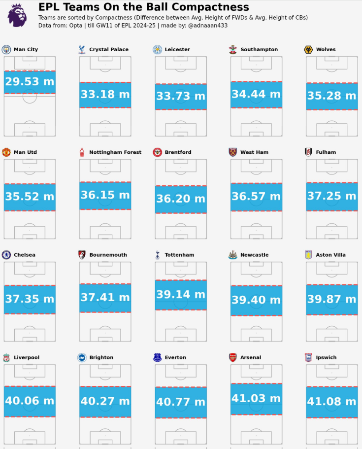
MA: The term ‘On the Ball Compactness’ refers to how close (vertically) the teammates stays on the ball, if they are more compact, that means they find themselves with short passes, if they aren't that much compact, they have to go long for ball progression. That's what I was trying to find out in the teams.
So, I took the Difference between avg. height of the Forwards and avg. height of the CenterBacks
(avg. height means avg. On the Ball actions distance from own goal line)
But sometimes in some matches, one forward may stay isolated and too far away from other teammates, Or sometimes we see the Forwards to stay in a much deeper position while receiving the ball. I decided to take the avg. height of the top two locations among the players and using that value as the avg. height of the Forwards.
As I follow Premier League regularly, I have noticed Man City this season, they stay compact on the ball. From there I was interested to know about the other teams’ compactness. That's why I made that visualization to compare teams playing style on the ball.
After making that visualization, a lot of people also asked me to make something like this for ‘Off The Ball Compactness’. But in event data the only actions with the ball is recorded, so getting the data of the players location while Off The Ball is not possible in this case. We have to analyse this from Tracking Data which is not available for free.
In this visualization below we can see what I mean by on the vertical compactness, here the shaded area is vertical compactness:
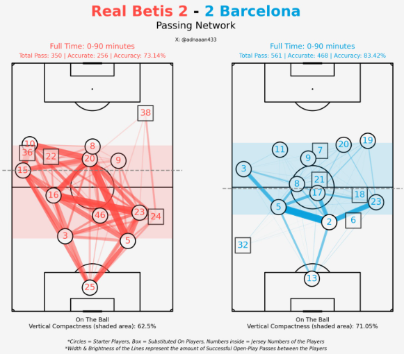
Look at Barcelona, I took the avg height of the 2 CBs (#5 Inigo and #2 Cubarsi) as the lower line. And avg height of the top 2 forwards (#20 Olmo and #19 Lamine). In between area of these 2 lines is what I call On the Ball Compactness!
Look, as here Lewa has dropped deeper more often, thus his avg location is much lower. That's why only considering the Forwards location wasn't enough to get the actual on the ball compactness. Thus I prefer to take the avg of top 2 forwards.
CJ: Your work often includes small multiples, looking across either teams, or leagues. Your full back analysis really caught the eye of our SportsVizSunday initiative. How do you think the use of trellis charts favors your analysis in the case of your LaLiga full back viz?
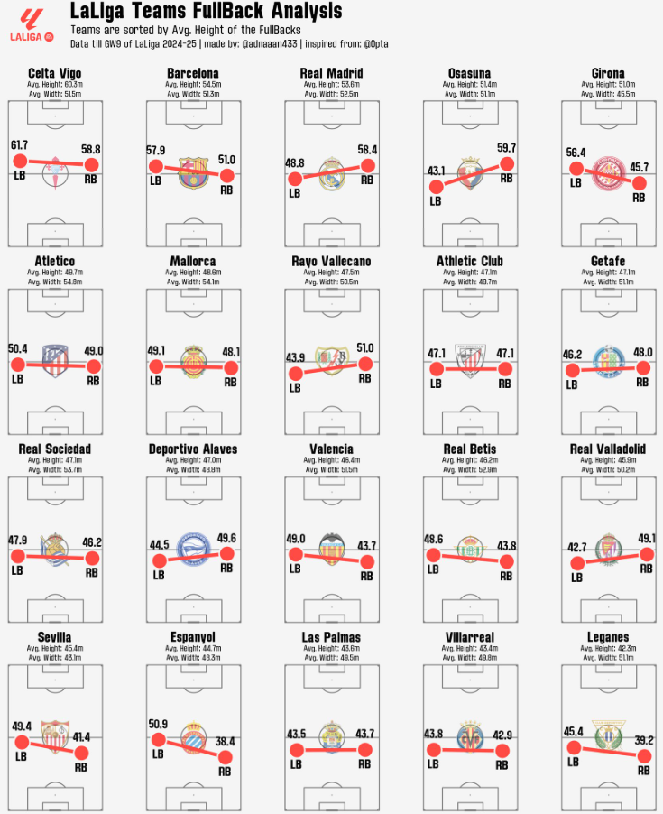
MA: Thanks a lot for appreciating my work on your platform. Actually that Fullback analysis wasn't my unique idea, I saw a post from the Opta analyst account which was analysing the Premier League Fullbacks. That inspired me to do the same for LaLiga.
We have seen a revolutionary change in the case of the role of a Fullback in modern football. Some coaches like highly attacking Fullbacks, some use them as inverted Fullback to increase the number of players in the midfield during build-up, some prefer to use as defensive Fullback which often becomes a third CB. So if we look at the avg. touch position of the Fullbacks in different teams, we can get some idea about their role in the team. That's why I made that visualization.
In La Liga, Celta Vigo, Barcelona and Real Madrid push up high.
Real Madrid, Osasuna, Girona, Rayo Vallecano, Sevilla, Espanyol asymmetric.
Leganes, Villarreal and Las Palmas very deep.
CJ: I really like your work on looking at corner pieces. If someone was a beginner and wanted help explaining how to recreate something like this, what steps would you outline from the code you wrote?
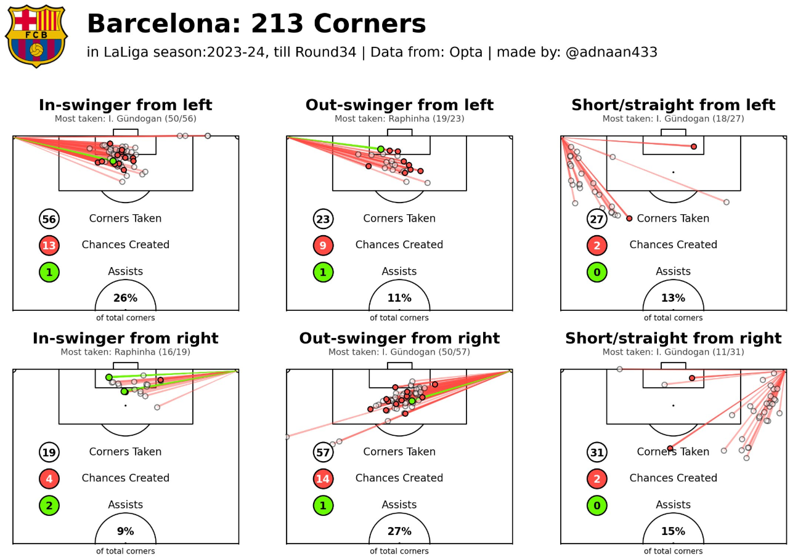
Thank you very much. Actually for the beginners the most important thing is to learn all the visualisation tools first. For example, as we mostly use the mpl soccer library, we have to get an idea about their most common and important functions. They have a beautiful website where every function has been explained with example codes for practice.
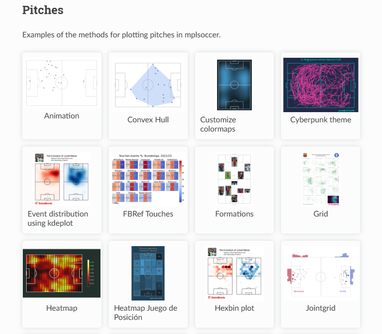
Then you have to understand the event data properly. For example if we get event data from Statsbomb, they have different columns for tagging detailed information about a pass or a shot. But when you scrape event data from whoscored website, they tag all the detailed information about a pass or a shot in a single qualifiers column. You have to learn how to filter the specific data from that qualifiers column.
For making the corners analysis visualization, I didn't get the information about whether a corner kick was in-swinger or out-swinger directly in the qualifiers column. There was information about whether the corner kick was taken with the Left foot or Right foot. According to this information I made the conditions that,
A corner kick will be in-swinger if,